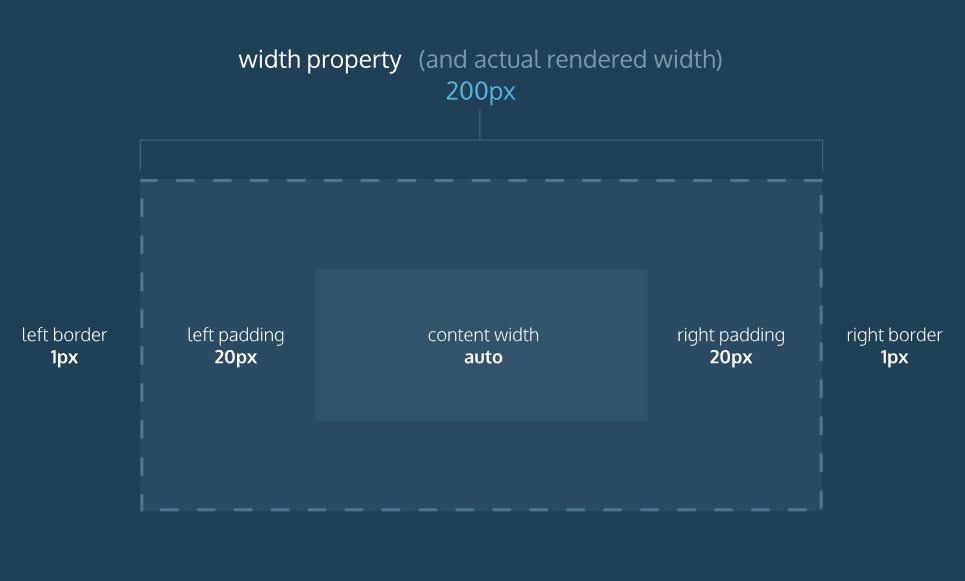

The default box model property is content-box.
The box model is set to content-box if it is not specified.
You can also set the box-model to border-box
* {
box-sizing: border-box;
}
In case of the border-box model, the width and heigh of the element include padding and border, but not margin, while in case of content-box
the width and height properties only apply to content.
The code in the example above resets the box model to
border-box for all HTML elements. This new box model avoids
the dimensional issues that exist in the former box model you learned
about.
In this box model, the height and width of the box will remain fixed. The border thickness and padding will be included inside of the box, which means the overall dimensions of the box do not change.
* {
box-sizing: border-box;
}
h1 {
border: 1px dashed #4f768e;
height: 150px;
width: 200px;
padding: 20px;
}
In the example above, the height of the box would remain at 150 pixels and the width would remain at 200 pixels. The border thickness and padding would remain entirely inside of the box.

Let's review what you learned:
box-sizing property controls the box model used by the
browser.
box-sizing property is
content-box.
border-box.border-box model is not affected by border thickness or
padding.